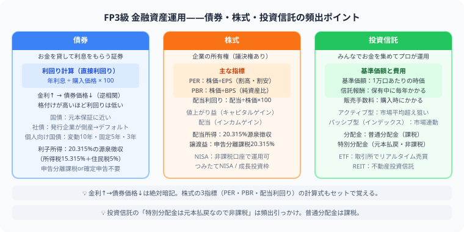

FP3級 金融資産運用とは？
NISAや債券・株式の4分野を例題つきで完全解説
この記事でわかること（5秒まとめ）
- 金利↑→債券価格↓という逆相関が最頻出の引っかけ
- PER・PBR・配当利回りは計算式とセットで覚える
- 新NISAは年360万円（生涯1,800万円）まで非課税で投資できる
- 投資信託の分配金を受け取ると基準価額は下がる点に注意
大谷 一輝 より
こんにちは、大谷です！
金融資産運用、僕も最初は「金利が上がると債券価格が下がる」の逆方向の関係に何度も引っかかりました。今日は数字を使いながら、直感に逆らうポイントを一つずつ整理していきます！
また、記事の末尾のほうにある【いいねボタン】をポチッと押してもらえると、めちゃくちゃ嬉しいです！
受験生
「金利が上がると債券価格が下がる」って、感覚的に逆な気がして毎回混乱します……。
大谷（簿記1級勉強中）
わかります、僕も最初そこでつまずきました。イメージとしては「新しく発行される債券の金利（利率）が上がると、古い低金利の債券は魅力が下がるので、売るなら価格を下げないと買ってもらえない」と考えると納得しやすいです。新商品が魅力的になった分、旧商品の価値が相対的に下がるイメージですね。
受験生
なるほど、腹落ちしました！PERやPBRの計算も苦手なんですが、実際の数字で見せてもらえますか？
大谷（簿記1級勉強中）
もちろんです。株価1,000円・EPS（1株当たり利益）100円の会社なら、PER＝1,000÷100＝10倍。株価1,000円・BPS（1株当たり純資産）1,000円ならPBR＝1,000÷1,000＝1倍です。数字を当てはめる練習を2〜3回やれば、公式を覚えるより先に体で覚えられますよ。
❓ 頻出テーマ——安全性・収益性・流動性で比べる
金融資産運用は、預貯金・債券・株式・投資信託などを扱います。苦手に感じる人も多いですが、FP3級では基本用語と簡単な指標を押さえれば十分得点できます。金融商品は「安全性・収益性・流動性」の3つで比べると覚えやすいです。

| テーマ | ポイント |
|---|---|
| 債券 | 利率、利回り、償還、債券価格と金利の関係 |
| 株式 | 配当、株主優待、PER、PBR、配当利回り |
| 投資信託 | 基準価額、運用管理費用、分配金、インデックス型 |
| NISA | 非課税投資枠、長期積立、対象商品 |
📝 PER・PBR・配当利回りを数字で計算する
例題①
株価1,000円、EPS（1株当たり利益）100円、BPS（1株当たり純資産）1,000円の会社。
PER＝株価÷EPS＝1,000÷100＝10倍
PBR＝株価÷BPS＝1,000÷1,000＝1倍
PBR＝株価÷BPS＝1,000÷1,000＝1倍
例題②
株価2,000円、EPS80円、BPS800円の会社。
PER＝2,000÷80＝25倍
PBR＝2,000÷800＝2.5倍
PBR＝2,000÷800＝2.5倍
PER・PBRとも数値が高いほど「割高」、低いほど「割安」と判断されます（業種による違いもあるため一概には言えませんが、まずはこの基本の向きを押さえましょう）。
💰 新NISAの非課税枠
| 枠 | 年間投資上限 | 備考 |
|---|---|---|
| つみたて投資枠 | 120万円 | 長期・積立・分散投資向けの商品が対象 |
| 成長投資枠 | 240万円 | 上場株式・投資信託等、対象商品が幅広い |
| 合計 | 360万円/年 | 生涯投資枠（非課税保有限度額）は合計1,800万円（うち成長投資枠は1,200万円まで） |
2024年の制度改正ポイント：非課税期間が無期限になり、年間投資枠は毎年リセットされます（使わなかった分の繰越はできません）。一方、生涯投資枠は商品を売却すれば再利用できます。
🔍 よくある間違い・試験の落とし穴
- 債券価格と金利の関係：金利が上がると債券価格は下がる（逆方向）。これが最頻出の引っかけです。
- PERとPBRの混同：PER＝株価÷EPS、PBR＝株価÷BPS。計算式をセットで覚えましょう。
- NISA口座の取り違え：つみたて投資枠（年120万円）と成長投資枠（年240万円）は別枠。非課税期間が無期限になった点も押さえましょう。
- 分配金の誤解：投資信託の分配金は基準価額から支払われるため、受け取ると基準価額は下がります。「分配金がもらえると得」という直感は誤りです。
📋 まとめ：金融資産運用 早見表
債券金利↑→価格↓の逆相関が最頻出
PER・PBR株価÷EPS、株価÷BPSで計算
新NISA年360万円・生涯1,800万円、非課税期間無期限
投資信託分配金を受け取ると基準価額が下がる